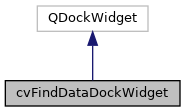

|
ACloudViewer
3.9.4
A Modern Library for 3D Data Processing
|
|
ACloudViewer
3.9.4
A Modern Library for 3D Data Processing
|
Dock widget for Find Data / Selection Properties panel. More...
#include <cvFindDataDockWidget.h>


Signals | |
| void | extractedObjectReady (ccHObject *obj) |
| Emitted when an extracted object is ready to be added to the scene. More... | |
| void | visibilityChanged (bool visible) |
| Emitted when the dock visibility changes. More... | |
Public Member Functions | |
| cvFindDataDockWidget (QWidget *parent=nullptr) | |
| ~cvFindDataDockWidget () override | |
| cvSelectionPropertiesWidget * | selectionPropertiesWidget () const |
| Get the selection properties widget contained in this dock. More... | |
| void | configure (cvSelectionHighlighter *highlighter, cvViewSelectionManager *manager, ecvGenericVisualizer3D *visualizer) |
| Configure the dock with necessary components. More... | |
| void | updateSelection (const cvSelectionData &selectionData) |
| Update the selection display with new data. More... | |
| void | clearSelection () |
| Clear the current selection display. More... | |
| void | refreshDataProducers () |
| Refresh the data producer list. Call this when data sources change (e.g., after loading new data) More... | |
Protected Member Functions | |
| void | showEvent (QShowEvent *event) override |
| void | hideEvent (QHideEvent *event) override |
Dock widget for Find Data / Selection Properties panel.
This widget provides a standalone dock panel for selection properties, similar to ParaView's Find Data panel. It can be shown/hidden independently of the selection tools state.
Layout follows ParaView's pattern:
Definition at line 36 of file cvFindDataDockWidget.h.
|
explicit |
Definition at line 21 of file cvFindDataDockWidget.cpp.
References CVLog::PrintVerbose().
|
override |
Definition at line 39 of file cvFindDataDockWidget.cpp.
References CVLog::PrintVerbose().
| void cvFindDataDockWidget::clearSelection | ( | ) |
Clear the current selection display.
Definition at line 119 of file cvFindDataDockWidget.cpp.
References cvSelectionPropertiesWidget::clearSelection().
| void cvFindDataDockWidget::configure | ( | cvSelectionHighlighter * | highlighter, |
| cvViewSelectionManager * | manager, | ||
| ecvGenericVisualizer3D * | visualizer | ||
| ) |
Configure the dock with necessary components.
| highlighter | The selection highlighter for visual feedback |
| manager | The selection manager for coordinating selections |
| visualizer | The 3D visualizer for rendering |
Definition at line 77 of file cvFindDataDockWidget.cpp.
References cvSelectionPropertiesWidget::setHighlighter(), cvSelectionPropertiesWidget::setSelectionManager(), cvSelectionBase::setVisualizer(), and CVLog::Warning().
|
signal |
Emitted when an extracted object is ready to be added to the scene.
Referenced by MainWindow::MainWindow().
|
overrideprotected |
Definition at line 147 of file cvFindDataDockWidget.cpp.
References event, CVLog::PrintVerbose(), and visibilityChanged().
| void cvFindDataDockWidget::refreshDataProducers | ( | ) |
Refresh the data producer list. Call this when data sources change (e.g., after loading new data)
Definition at line 126 of file cvFindDataDockWidget.cpp.
References cvSelectionPropertiesWidget::refreshDataProducers().
|
inline |
Get the selection properties widget contained in this dock.
Definition at line 46 of file cvFindDataDockWidget.h.
|
overrideprotected |
Definition at line 133 of file cvFindDataDockWidget.cpp.
References event, CVLog::PrintVerbose(), cvSelectionPropertiesWidget::refreshDataProducers(), and visibilityChanged().
| void cvFindDataDockWidget::updateSelection | ( | const cvSelectionData & | selectionData | ) |
Update the selection display with new data.
| selectionData | The new selection data to display |
Definition at line 111 of file cvFindDataDockWidget.cpp.
References cvSelectionPropertiesWidget::updateSelection().
|
signal |
Emitted when the dock visibility changes.
Referenced by hideEvent(), and showEvent().